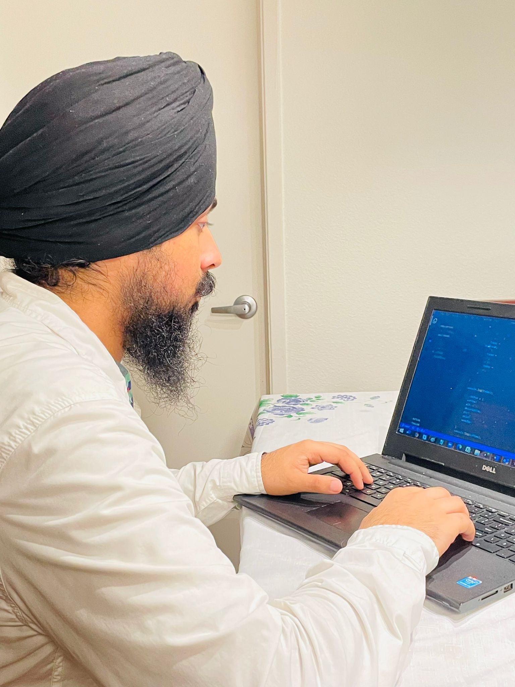

About Me
My name is Jashanpreet Singh. I do have hobbies, I like photography and traveling. I have a Bachelor of Science degree in Computer Science Engineering from Gulzar Group of Institutes in India. I have skills in HTML, CSS, and JavaScript. I am currently enrolled in the Quality Insurance IT program at Year Up in Seattle. I am improving my front-end and back-end programming as well as gaining the skills for software testing, for example, unit testing and Junit testing. I am passionate about learning new skills and driven to continually innovate.
Experience:
• Provide satisfactory customer service• Respond to over 40+ customer calls daily and solve 90% of their concerns
Skills:
• Customer Service
• Business Communication
• CSS
• Java Script
• GitHub/SCM tools
More Info go to LinkedIn

- Customer Service
- Business Communication
- CSS
- Office 365
- JavaScript
- GitHub/SCM tools October 2020 - Present
- Html
- Bootstrap
Donations Attendant, October 2020 - Present, Evergreen Goodwill Industries, Kirkland, WA
- Assist with inventory, including receiving and stocking the items
- Provide satisfactory customer service
- Respond to over 40+ customer calls daily and solve 90% of their concerns
- Assist coworkers with lifting the 50-pound weight items daily
Quality Assurance/Year Up Program/ Seattle Central College 2022
Year Up is an intensive, competitive technical training and career development program with 250 corporate partners, graduating 1,500 students annually across ten cities. The program includes college-level courses, professional training, and a six-month internship. Year is a Non-profit organization.
- Completing coursework in Edu Career Exploration, Bus application-2 Data analysis, Business Communication-2, Intro software development and Version, Program and Web page concepts, with specialized training in Quality Assurance Track
- B. Tech of Computer Science Engineering
- 8.0/10 GPA
- Certification of graduation
LANGUAGES Punjabi - Fluent